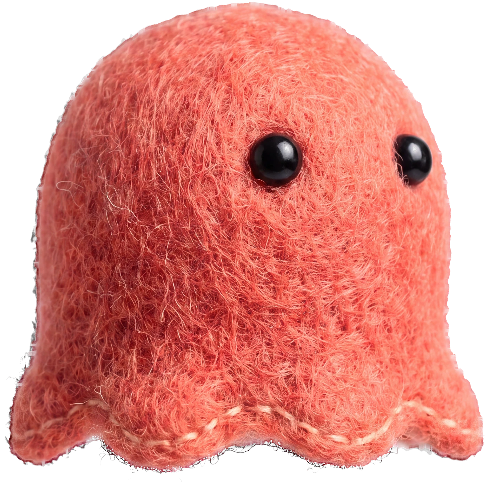
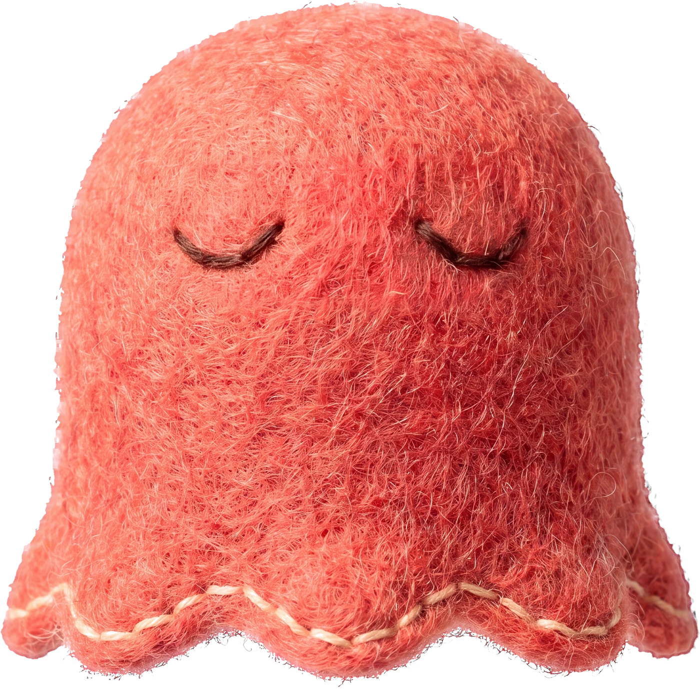
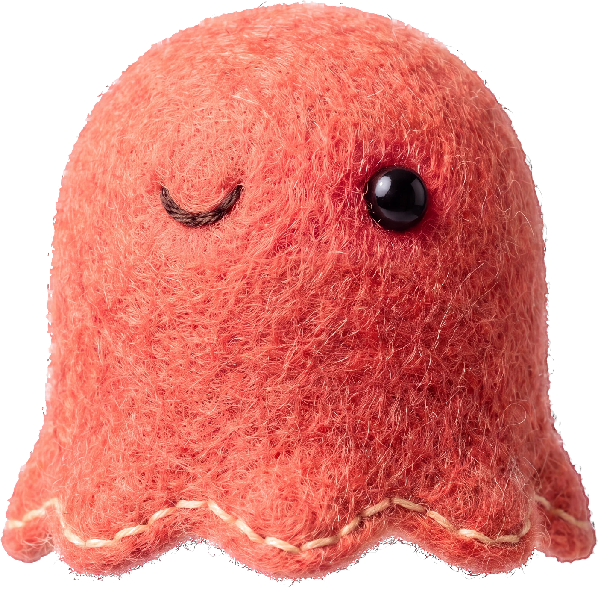

SYNK LAB1 Korean phrase
Forgot something?Koreans say…
아 맞다!
“Oh, right!”
a · mat · tta

SYNK LAB03 / 06
EVEN MONGLE FORGETS
Mongle does it too…
어? 창밖에 새!
…아 맞다! 숙제!
같이 하자!




Huh? A bird outside!
…Oh right! Homework!
Let’s do it together!
SYNK LAB04 / 06
YOUR TURN
Say it with me
아 맞다!
a · mat · tta


Now you!
Nice!
SYNK LAB05 / 06
FILL THE BLANK
What do youalways forget?
아 맞다,!

Comment yours below ↓
SYNK LAB06 / 06
아 맞다!
Send this to a friendwho always forgets